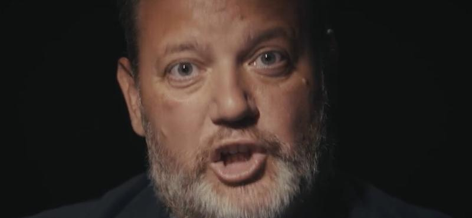

Heti Ajánló
Minden héten szombaton megosztjuk veletek az előző hét szombattól az aktuális hét péntekéig összegyűjtött általunk legérdekesebbnek tartott cikkeket és videókat. Reméljük, hogy hasznosnak találjátok ezeket a forrásokat!
Ajánlott Cikkek

Az egész rendszer az erőátvitelről szól – Orbán és a megtorpant gazdaság III.
Egy elemzés Orbán Viktor gazdaságpolitikai irányvonaláról.
Olvasd el a teljes cikket itt!

Somkúti Bálint: MCC, 1956, szuverenitásvédelmi hivatal, geopolitikai szakértő
Beszélgetés Somkúti Bálinttal a geopolitikai helyzetről.
Olvasd el a teljes cikket itt!MNB költségvédelmi jelentés – Rezsivédelmi alap
A Magyar Nemzeti Bank legfrissebb költségvédelmi jelentése.
Olvasd el a teljes cikket itt!
A határvadászok közel negyede mondott fel szeptemberig
Részletek a határvadászok helyzetéről.
Olvasd el a teljes cikket itt!
Fővárosi Törvényszék: bírálják a fizetéseket
A legfrissebb hírek a bíróságok helyzetéről.
Olvasd el a teljes cikket itt!
Az állami egészségügy mindenkit el tud látni, csak az időpont kérdéses
Friss információk az állami egészségügy helyzetéről.
Olvasd el a teljes cikket itt!
Békés Márton: nem jó blokkban vagyunk
Politikai elemzés Békés Mártonnal.
Olvasd el a teljes cikket itt!
Kiforgatta Szijjártó Péter szavait az orosz állami hírügynökség
Elemzés a külügyminiszter szavairól.
Olvasd el a teljes cikket itt!